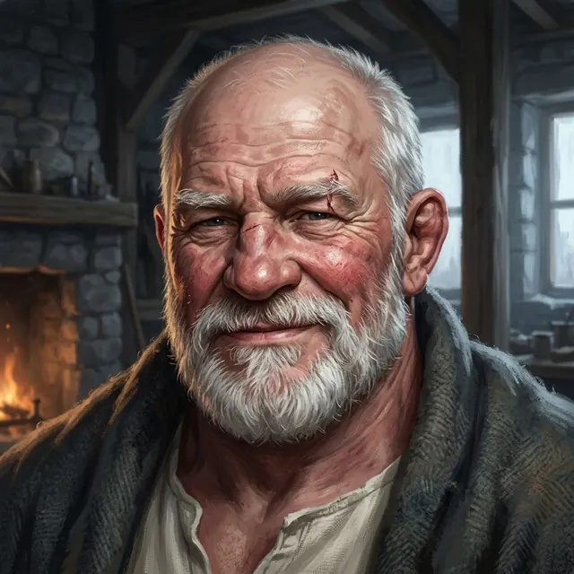

Ser Hollis Garrow
Of the Sixth Lance
Only what the story has shown so far.
Appearance
Sixty-one, broad through the chest and thick through the neck, with a bald crown, close-cropped white hair at the sides, a full white beard and a face gone red and broken-veined from wind and drink. Pale grey-blue eyes sit in a nest of creases, an old nick of scar cuts through one white eyebrow, and his voice carries over the Wend in flood. His right leg is gone above the knee since Harrow Ford; under his cot lies the leg the lay brothers made him, beech and a leather cup, which fits the way a boot fits someone else. He talks in a sergeant's rhythm, profane and warm, with insults doing the work of affection, and he calls Darrow "Captain" and lets the word carry whatever he needs it to.
Now
Last seen Chapter 3 · Between — The Even Bells · Saint Ysolde's
At the Grey Cot with the lad's hand, keeping the even bells of the night for him, and the fourth.
Story so far
At Harrow Ford he brought the writ that sent the Sixth and the Ninth into the river, and came back from it missing his right leg above the knee; he has had the cot next to Darrow's at Saint Ysolde's since, with his name second on the Confessor's list. When the lad of his Sixth, Ser Benedek Orrin, was found Hollowed on the feast morning, Hollis would not let him be carried to the far cots, and has sat beside the Grey Cot with the lad's hand in his ever since. He watched a letter in blue wax burn and left the hall for the first time; in the cloister he asked the Captain whether the kind lies he told the lad had sent him wherever he has gone, and asked him to sit up a while. When the House heard that the lad stopped saying his oath between the third bell and the fourth, Hollis shut his eyes, and when Wren offered to go down the undercroft stair he told the Captain not to send that girl down a hole.
Quote
Out loud, Captain. Since I swore it. I told him to get some sleep.
Relationships
- Toward Darrowfond
- Ser Darrow of Edgemoorthe captain on the next cot
He brought Darrow the writ at Harrow Ford and told him to mount up, rode the next cart over on the road back, has had the next cot at Saint Ysolde's since, and now stands second on a list on which Wren, asked who was first, only looked at Darrow. For a fortnight he has thought of the Captain fighting from a chair, if somebody taught him to stop looking at the floor.
- Wren Ashdownthe girl with the ledger who brought word of the list
She was the one who brought word of the grey cloaks and the censer on the Holloway, and who told him his name stood second on the list.
- Ser Benedek Orrinthe lad on the next cot, of his own Sixth
Not yet thirty, a boar spear through the shoulder at the ford and a fever after it; he asked Hollis what second on the list meant, offered to carry him down the Steps himself, and was told he couldn't carry a bucket, which made him smile, which was what the words were for.
- Rae Thornethe carter of the last cart
He cursed her from her own cart on the last day of the road north, and she answered 'Aye' as if he had remarked on the weather; it was she who heard the list with his name second on it read out at Coldmere.
The Reckoning
Level 2 · Bound
Unlit the Grace is gone; nothing kindled in its place
Arts Iron Grip II
Deeper ⟦ unread ⟧
Read with Warden's Eye III. Stronger sight reads deeper. The ranks of the Ember run Bound · Kindled · Tempered and up; Oathsworn is borrowed strength.
Known facts
What the page has shown (53)
- He commands the Sixth Lance, which was dressing its line a hundred yards downstream of the Ninth at Harrow Ford.Prologue · I — Harrow Ford
- He carried the sealed writ from command ordering the Sixth and the Ninth to clear the ford with the Second in reserve, and broke its wax with his thumb without looking at it.Prologue · I — Harrow Ford
- When Darrow pointed at the carts, old people and children behind the clan line and suggested the clans were coming through rather than at them, Hollis said they were stupid, that the writ said clear the ford, and that Darrow's head was not as fast as his feet.Prologue · I — Harrow Ford
- He lost his right leg above the knee at Harrow Ford.Prologue · II — The Steps
- On the road back he cursed for five days without repeating himself once: the surgeon, the river, the Crown, the clans, the oxen, the weather, the carter, Darrow, and finally himself, which was when he went quiet.Prologue · II — The Steps
- On the last cart to the foot of the Steps he started on the carter, Rae, somewhere past the second milestone, and she said 'Aye' as if he had remarked on the weather.Prologue · II — The Steps
- His answer to the Crown's proclamation, which offered the Faithless mercy at the Oathspire and leave to kneel anew, was "Kneel to that," and nobody on either cart laughed.Prologue · II — The Steps
- He kept the cot next to Darrow's through the six weeks before the Binding, mostly drunk, and offered commentary.Prologue · III — The Binding
- He knew the grey cloaks and the smoking censer on the Holloway for Confessors before anyone else said the word, and his face went the color of the window.Chapter 1 · Scene 1 — The Reading of the Knots
- His name is second on the list of the Faithless at Saint Ysolde's that was read out at the inn in Coldmere; asked who was first, Wren did not answer and looked at Darrow.Chapter 1 · Scene 1 — The Reading of the Knots
- He can say the order from Harrow Ford with his eyes shut, and has kept the paper folded small inside his shirt, wax inward, against his ribs; he has not looked at the seal since he broke it on the west bank.Chapter 1 · Interlude — The Wax
- The lay brothers made him a leg of beech and a leather cup, which fits the way a boot fits someone else; he took nine steps on it and swore at every one.Chapter 1 · Interlude — The Wax
- He has not had a drink in two days, meant to tell somebody, and could not think who.Chapter 1 · Interlude — The Wax
- When Benedek Orrin of his own Sixth asked what second on the list meant and whether they would take him down, he said nobody was taking anyone up eleven hundred steps in the snow, and that they would read their list at the bottom and freeze.Chapter 1 · Interlude — The Wax
- For a fortnight he has thought of the Captain with a sword and a chair under him: a man could fight sitting down, if somebody taught him to stop looking at the floor.Chapter 1 · Interlude — The Wax
- He told Benedek to say his oath and shut his eyes, and while the lad's lips moved he pushed the folded writ, still unread, into the cup of the wooden leg, where no Confessor would think to look; he has been telling himself since midsummer that he will look at the wax later.Chapter 1 · Interlude — The Wax
- His read of the Confessors: a captain who won't kneel is a song in every taproom from the Steps to Calden, so they take the song down the mountain and make it kneel where people can see. "Mercy's the word on the paper. The paper's the point."Chapter 1 · Between — The Paper's the Point
- He had the knucklebones out, five sheep's knuckles on the blanket, and played Darrow for a story told true; when Darrow caught the stone he chanted the loser's lines and paid: two days without a drink, three by the dusk bell, and he had meant to tell somebody and couldn't think who.Chapter 1 · Between — The Stone
- His hand under the falling bones was steady the way a thing is steady when it is being held still; when Darrow asked about his hands he called them a wonder of the age and told him to sit down or play.Chapter 1 · Between — The Stone
- When the bell came and Benedek asked the Captain for the words, he shut his eyes on the instant, the way forty years of barracks teach a man to be asleep when something is about to be asked of him; afterwards he opened one eye, looked at Darrow for the length of a heartbeat, and shut it again.Chapter 1 · Between — The Words
- At the dawn bell he lay on his back between Benedek and the Captain while they said the words and studied the beams; whatever he made of it, he kept in his beard.Chapter 1 · Scene 4 — Boots on the Board
- Two lay brothers carried him up the gatehouse's inside stair in a chair to the window, because he had said, loud enough for the court, that he would see the man who wanted him.Chapter 1 · Climax — The Law of Names
- When the Captain's name was read first he made a sound in his beard that was not a word.Chapter 1 · Climax — The Law of Names
- When Marrant read his name second he looked at the blue wax of the seal against the bars and held there, then away to the mountain, and said nothing at all, which was not like him; his hands on the sill were steady because he was holding them so.Chapter 1 · Climax — The Law of Names
- When the Captain had given his name at the bars, Hollis told him from the window that he had moved when his name was read, that he had seen it and nobody else had, and that he had walked up and given it anyway; then he said 'Captain', once, and let the word carry what it needed to.Chapter 1 · The choice — Darrow of Edgemoor
- Carried down from the gatehouse in his chair on the night of the gate, he gave the hall the names that had been read at the bars, the Ninth's and the Sixth's.Chapter 2 · Scene 1 — Good Night, Captain
- When a grey cloak sent the Captain of the Ninth the Confessor's good night by his rank, he started on a rude answer; the Captain's was shorter, and he lay back pleased with it.Chapter 2 · Scene 1 — Good Night, Captain
- Awake with his face to the wall after the night bell, he asked the Captain whether his three Ninth men were all there, and when told they would not go down on his back, said "Ninth" as if it were the worst word he knew.Chapter 2 · Between — Same Paper
- Over knucklebones after the night bell he paid a story told true: at the gatehouse window, for as long as it takes to say it, he had thought it good that the Captain should go down and kneel so the rest of the paper went back in the Confessor's cloak; asked what he thought now, he said he would carry the Captain down the Steps himself before he let the Confessor have him.Chapter 2 · Between — Him Who Can Stand
- His hands stop shaking while they have something to hold: the knucklebones steadied them in play, and his fist was steady shut on them after.Chapter 2 · Between — Him Who Can Stand
- When the Captain used his full name, he swore to say the next such thought to his face rather than keep it to the wall.Chapter 2 · Between — Him Who Can Stand
- When Benedek was found Hollowed he took the lad's hand in both of his, said out loud, as he had sworn to the Captain, that he had told the lad to get some sleep, and did not let go.Chapter 2 · Scene 2 — Feast Bread
- He would not eat for the Mender and would not let go of Benedek's hand; he ate when the Captain held the lad's hand for the length of a loaf and put the bread into his own, and his hand did not shake because it was never empty.Chapter 2 · Between — One Hand
- He told the Captain to tell the Mender he had eaten, and not to tell her how.Chapter 2 · Between — One Hand
- When the novices came at dusk with a stretcher to carry Benedek to the far cots, he told them what to do with it, and they brought the far cots' grey blanket to the lad instead.Chapter 2 · Scene 3 — Nobody Passed
- Told that nobody passed in the night, he said the word to the lad's hand as if it were the worst of it.Chapter 2 · Scene 3 — Nobody Passed
- The kitchen's book has him at four to one to be Hollowed next, because he will not leave the Grey Cot.Chapter 2 · Between — The Book
- Without looking round from the Grey Cot he knew Darrow had come in with a letter, and asked who it was from.Chapter 2 · Scene 4 — The Last Hundred
- He watched the blue wax burn in the brazier and said nothing at all; Darrow had seen that silence once before, at the bars.Chapter 2 · Scene 5 — Come Home, Brother
- He left the Grey Cot on the beech leg, strapped on without help, for the first time since the lad was found.Chapter 2 · Scene 5 — Come Home, Brother
- He told the lad nobody was taking anyone, and when the lad asked, that they would be let kneel: say your oath, lad, shut your eyes.Chapter 2 · Between — Say Your Oath, Lad
- He asked the Captain whether the lad went looking for the kneeling in the night because he had told him it was there.Chapter 2 · Between — Say Your Oath, Lad
- He began to tell the Captain to get some sleep, stopped with the word in his mouth, and asked him to sit up a while instead.Chapter 2 · Between — Say Your Oath, Lad
- Of Rae, he told the lad she talks to her oxen in whole sentences and saves nothing for the rest of them.Chapter 2 · Scene 6 — Which of Us
- When the hall turned to look at Wren at the wall, he called out loud enough for the row whether she had lost something, and the row went back to its own business.Chapter 2 · Between — Told First
- He said the lean of the flame was no draught; he has slept in draughts forty years, and draughts come at you.Chapter 2 · Scene 7 — The Door Below
- When the night novice told how the lad said his oath at three bells and not the fourth, he shut his eyes and did not open them.Chapter 2 · Climax — The Fourth Bell
- When Wren offered to go down the stair, he told the Captain not to send her down a hole.Chapter 2 · Climax — The Fourth Bell
- He told Sister Pell to go and get some sleep, the same words he had given the lad the last night the lad could hear them, and his hand closed slowly on the lad's.Chapter 3 · Scene 1 — The Flour
- Told the Mender has not said yes yet, he told the Captain to ask her faster, because the lad is not getting any warmer.Chapter 3 · Scene 1 — The Flour
- Every night he tells the lad the truth he did not tell him alive: that nobody was letting anybody kneel, and that he said it so the lad would sleep.Chapter 3 · Between — The Even Bells
- He said it was the first time he had heard the oath out of the Captain since the river, and that he knew the difference it was not said for the Crown.Chapter 3 · Between — The Even Bells
- He will say the lad's oath himself at the even bells of the night, and the fourth bell is his.Chapter 3 · Between — The Even Bells
Appearances
27 scenes · named in 5- Prologue — The Three Heartbeats
- Chapter 1 — The Confessor at the Steps
- Chapter 2 — The Grey Cot
- Scene 1 — Good Night, Captain
- Between — Same Paper
- Between — Him Who Can Stand
- Scene 2 — Feast Bread
- Between — One Hand
- Scene 3 — Nobody Passed
- Between — The Book named
- Between — The Far Lamp
- Scene 4 — The Last Hundred
- Between — Against the Ovens named
- Scene 5 — Come Home, Brother
- Between — Say Your Oath, Lad
- Between — Not in the Hall named
- Scene 6 — Which of Us
- Between — Told First
- Scene 7 — The Door Below
- Climax — The Fourth Bell
- The choice — Her Count named
- Chapter 3 — The Undercroft